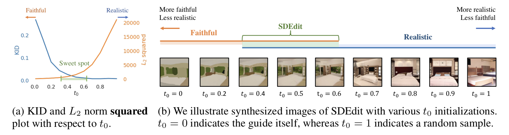
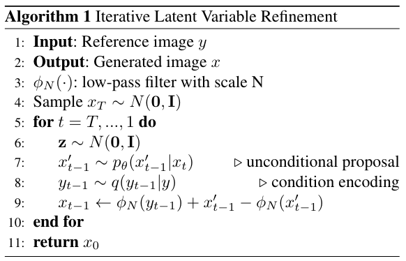
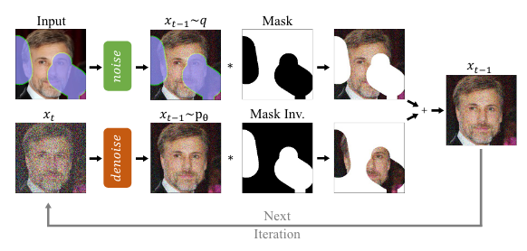
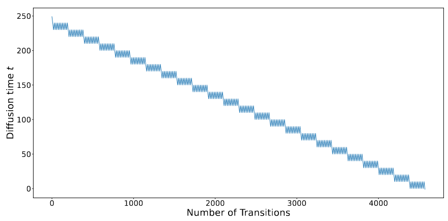
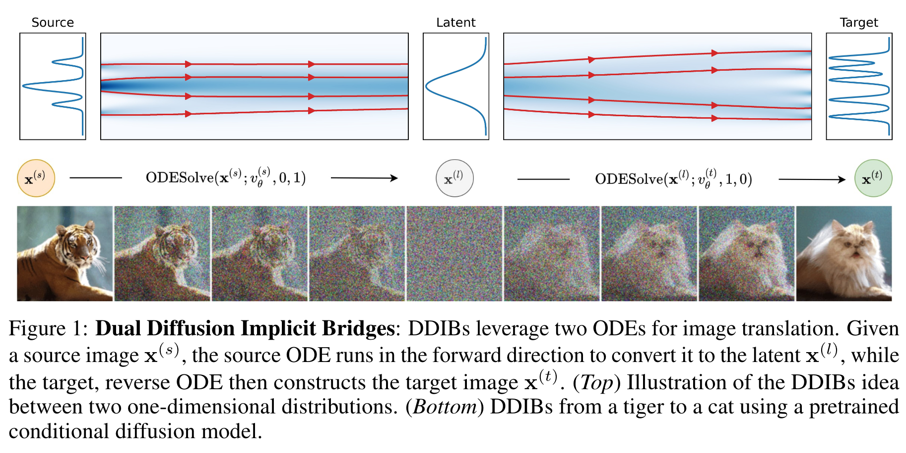
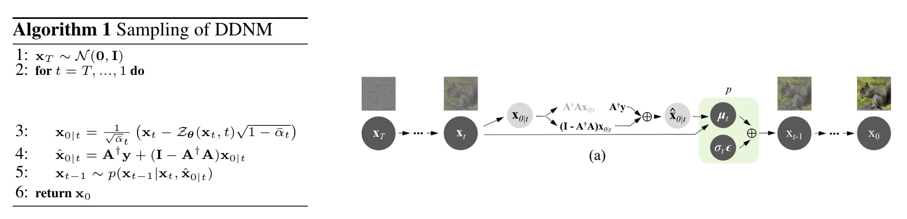
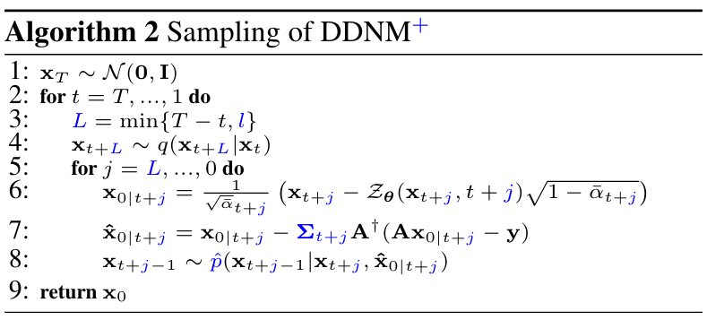

扩散模型应用·图生图与图像恢复
\[ \newcommand{\x}{\mathbf x} \]
封面来自 CivitAI.
图生图可以泛指基于输入图像生成新图像的过程，因此诸如 image restoration（超分、去噪、填充、上色等）、image-to-image translation、style transfer 等任务都可以归为其中。特别地，本文不包括基于文本的图像编辑方法，相关内容可在扩散模型应用·基于文本的图像编辑中查看。
SR3
Google TPAMI 2022 2021.04.15
SR3[1] 将 DDPM 应用在了图像超分辨率中，取得了 SOTA 的效果。超分辨率是一种以低分辨率图像为条件的生成任务，把低分辨率图像融入模型的方式很简单——将其 bicubic 插值后 concatenate 到输入即可（作者也尝试了更复杂的，如 FiLM，但发现效果无明显差别）。另外，作者发现在 concatenate 之前做一些高斯模糊扰动能够有效提升 FID 2 个点。
与 DDPM 相比，SR3 做了一些有趣的改变。训练时，对于时间步 \(t\)，DDPM 用的是 \(\bar\alpha_t\) 来计算相关变量和损失函数，但是 SR3 并没有直接使用 \(\bar\alpha_t\)，而是从分布 \(\bar\alpha\sim p(\bar\alpha)=U(\bar\alpha_{t-1},\bar\alpha_t)\) 之中随机取值；另外，模型直接接受 \(\bar\alpha\) 作为输入而非时间步 \(t\). 这些改变允许我们在 inference 时在一定范围内灵活地调整 noise scale 和采样步数，从而提高效率。
最后，论文中零散地提及了三个 future research，可供参考：
- 给前向过程加入条件
- 通过 \(p(\bar\alpha)\) 来 scale 损失函数
- 引入类似于 BigGAN 的 quality-diversity trade-off，当然我们现在知道 classifier(-free) guidance 提供了一种解决方案。
点击查看 SR3 的生成样例（摘自论文）
SDEdit
Stanford CMU ICLR 2022 2021.08.02
SDEdit[2] 的思想一张图就能看明白：

真实图像和我们画的图像分属两个分布，我们通过前向加噪过程让两个分布的支撑集越来越大，直到产生交集就停下。从交集中的一点出发，用在真实图像上训练好的扩散模型逆向去噪，就回到了真实分布。
从图像处理的角度，我们知道加噪过程首先破坏的是高频信息，然后才破坏低频信息。所以当我们加噪到一定程度时，就可以去掉不想要的细节纹理，但仍保留大体结构，于是生成出来的图像就既能遵循输入的引导，又显得真实。
显然，这里一个关键问题就是在什么时候停止加噪。如果停的太早，那么结果不够真实；如果停的太晚，那么可能丢掉了我们想要的引导。论文里称之为 realism-faithfulness trade-off.
遗憾的是，这个问题没有一个通用的解答。它跟用户究竟想要更真实还是更还原有关，还跟引导图像本身的质量有关——如果引导图像是一片白色，那怎么着也没法很还原。一般而言，作者说在 \([0.3,0.6]\) 区间内应该都还行（设时间是从 \(0\) 到 \(1\)）。

点击查看 SDEdit 的生成样例（摘自官网）


ILVR
ICCV 2021 (oral) 2021.08.06
给定一张参考图像 \(\mathbf y\)，ILVR[3] 通过精调 DDPM 逆向过程的每一步，让生成的图像 \(\x_0\) 接近参考图像。所谓接近，即作者希望 DDPM 能够满足： \[ \phi_N(\x_t)=\phi_N(\mathbf y_t) \] 其中 \(\phi_N\) 是一个低通滤波器，将输入图像下采样 \(N\) 倍后上采样回来（我们知道下采样会丢失图像的细节，即高频信息，所以操作后的图像只剩下了低频信息，是谓低通滤波）；\(\mathbf y_t\) 是参考图像的加噪版本。上式的意义很明显：希望生成图像的低频信息与参考图像的低频信息相同。为了做到这一点，作者设计了如下逆向过程算法：

可以看到，在 DDPM 给出的 \(\x'_{t-1}\) 的基础上，作者加上了一个偏移量 \(\phi_N(\mathbf y_{t-1})-\phi_N(\x'_{t-1})\). 假若上/下采样是最近邻插值，那么 \(\phi_N(\phi_N(\x))=\phi_N(\x)\)，则： \[ \begin{align} \phi_N(\x_{t-1})&=\phi_N\left(\phi_N(\mathbf y_{t-1})+\x'_{t-1}-\phi_N(\x'_{t-1})\right)\\ &=\phi_N\left(\phi_N(\mathbf y_{t-1})\right)+\phi_N\left(\x'_{t-1}\right)-\phi_N\left(\phi_N(\x'_{t-1})\right)\\ &=\phi_N(\mathbf y_{t-1})+\phi_N(\x'_{t-1})-\phi_N(\x'_{t-1})\\ &=\phi_N(\mathbf y_{t-1}) \end{align} \] 即满足了条件。作者尝试了不同的上/下采样方法，发现效果其实差不多。
下采样率 \(N\) 是一个超参数，\(N\) 越小，保留细节越多，生成图像就越接近参考图像。作者还指出，我们不一定在整个逆向过程都用到参考图像，可以只选择某些步用。选的步数越多，留给随机采样的发挥空间就越少，生成图像也越接近参考图像。
ILVR 与 classifier guidance 的联系
是否有人觉得，ILVR 似曾相识？没错，ILVR 和 classifier guidance 的本质是一样的！
- ILVR：对采样的结果偏移了 \(\phi_N(\mathbf{y}_{t-1})-\phi_N(\x'_{t-1})\)；
- Classifier guidance：对采样分布的均值偏移了 \(s\Sigma\nabla_\x \log p(y\vert \x)|_{\x=\mu}\).
一方面，偏移结果（先采样再偏移）和偏移均值（先偏移再采样）显然是等价的；另一方面，\(\phi_N(\mathbf{y}_{t-1})-\phi_N(\x'_{t-1})\) 大致是 \(\x'_{t-1}\) 到 \(\mathbf{y}_{t-1}\) 方向的向量，朝该方向走能够提升 \(p(\mathbf{y}_{t-1}\vert \x_{t-1})\)，这与 \(\nabla_\x \log p(\mathbf{y}_{t-1}\vert \x_{t-1})\) 的意义相吻合。
更有甚者，二者都有一个控制引导强度的超参数：下采样率 \(N\) 和 guidance scale \(s\). 当 \(N\) 增大时，满足 \(\phi_N(\x_t)=\phi_N(\mathbf{y}_t)\) 的 \(\mathbf{y}_t\) 更多，相当于 \(p(\mathbf{y}_{t-1}\vert \x_{t-1})\) 分布变得更平缓，引导作用更弱；而 \(s\) 减小时，\(p(y\vert\x)^s\) 也是变得更平缓，引导作用也是更弱。完美！
事实上，后文的许多工作都可以与 classifier guidance 建立起类似的联系。这类方法的特点是无需训练，只需要加载预训练模型，对逆向采样过程施加引导即可，对算力要求十分友好。
ILVR 可以有许多有趣的应用，比如给一个在狗上面训练的模型以猫作为参考图像，并合理控制 \(N\)，那么模型就会生成像这只猫的狗；又比如我们对图像做一些粗糙的涂改后当作参考图像，合理控制 \(N\) 和步数范围，就能让模型既保留原有细节、又和谐化涂改的地方。
点击查看 ILVR 的生成样例（摘自论文）
Palette
Google SIGGRAPH 2022 2021.11.10
Palette[4] 是 Google 提出的基于扩散模型做 Image-to-Image Translation 的统一框架，并分别在 colorization, inpainting, uncropping (outpainting) 和 JPEG restoration 四个任务上做了实验。Palette 并没有对不同任务做特别的调参、定制网络架构或任何辅助的损失，事实上，它也没对扩散模型做什么特别的改变，仅仅是把不同任务的退化后的图像当作条件给到模型而已。可能唯一需要提一下的就是对于 inpainting 和 uncropping (outpainting)，作者没有把 binary mask 给到模型，而是把缺失区域填上 Gaussian noise，这样的设置与扩散模型更搭。
作者做了两方面的 ablation study：
- 常用 U-Net 架构里面的 (global) self-attention 真的有用。作者实验对比了 local self-attetion、无 attention 但用 dilated convolution、无 attention 但叠双倍的 resnet blocks，最后还是发现沿用 DDPM 就有的 attention 层最管用。
- 许多基于扩散模型的图像恢复或翻译任务都采用的是 L1 loss 而非 L2 loss（如上文的 SR3 就用的 L1），作者实验发现二者的采样质量差不多，但是 L2 loss 能给出更多样的结果。推测是 L1 loss 倾向于让模型丢掉更多的模式。
点击查看 Palette 的生成样例（摘自官网）


RePaint
CVPR 2022 2022.01.24
RePaint[5] 是专注于 image inpainting 任务的模型，其基本思想与Blended Diffusion[6] 的 mask guidance 是一样的，即对于采样过程的每一步，掩码内使用模型的预测结果，而掩码外使用真实图像的加噪结果，如下图所示：

然而，上述采样模式会导致一个严重的问题——mask 内填充的内容与 mask 外已知的内容在语义上不能很好地匹配。这是因为针对已知部分的加噪过程并没有考虑 mask 内生成的部分。尽管在下一步模型会试图和谐化上一步的结果，但它本身又会带来的新的不和谐，所以这个问题会一直存在。更有甚者，我们的 noise level 是逐渐减小的，所以越往后越难更正前面各步带来的不和谐。
但是，考虑到 DDPM 的机制是生成符合数据分布的图像，它理应收敛到语义匹配的结果上，只是实际采样时每一步都引入的不和谐让收敛过程变得很慢。为此，作者提出了 resampling 技术，即不断地把生成的 \(\x_{t-1}\) 重新扩散回 \(\x_t\)，在马尔可夫链上“反复横跳”，以期模型能缓解不和谐之处。当然，往回走一步可能不够，作者引入了两个超参数：\(j\) 表示每次往回走的步数，\(r\) 表示往回走多少次。下图是 \(j=10,r=10\) 下时间步的变化情况：

显然，resampling 的代价就是采样时长变成了原本的 \(r\) 倍。
相比传统的基于 Auto-Encoder + GAN 的模型，基于扩散模型的 RePaint 有一个显著的优势：仅一个预训练模型就能无缝适配任意形状的 mask. 这是因为 RePaint 只改动了扩散模型的采样过程，不必专门为填充任务训练。作者尝试了几种不同的 mask 设置：Wide、Narrow、SR 2x、Alt. Lines 、Expand、Half，都取得了不错的效果。
点击查看 RePaint 的生成样例（摘自官方 repo）


DDRM
2022.01.27
DDIB
ICLR 2023 2022.05.16
DDIB[8] 的理论写得非常 fancy，联系了 Schrödinger Bridge Problem、Optimal Transport 等理论知识，但其实做法很简单——把两个分别训练的 DDIM 用 latent space 连接起来，就可以完成 image-to-image translation 了，如下图所示：

具体而言，设有两个分别在源域 A 和目标域 B 上预训练好的扩散模型，输入一张域 A 的图像，DDIB 首先在第一个扩散模型上用 ODESolver（如 DDIM）把输入图像转换为隐变量，再在第二个扩散模型上用 ODESolver（如 DDIM）把该隐变量转换到域 B，就完成了域 A 到域 B 的迁移。
尽管 DDIB 非常直观简单，相比其他 image-to-image translation 方法，它有几个优点：
- 具有 cycle consistency：\(A_1 → l_1 → B → l_2 → A_2\)，若忽略 ODESolver 的离散化误差，则 \(A_1=A_2\).
- DDIB 用的两个扩散模型分别训练互不干扰，可以保证数据隐私性。
- 如果要在 \(n\) 个域之间转换，只需要分别训练 \(n\) 个模型，而如 CycleGAN 需要两两训练 \(O(n^2)\) 个模型。
但是，DDIB 毕竟没有显式地指导，所以转换过程也较难控制。特别地，当源域和目标域比较接近时（如狮子和老虎），DDIB 还能较好地工作；但是如果二者差距太大（如鸟和狗），那么源域图像中的主体的姿态就很难被保留下来。
点击查看 DDIB 的生成样例（摘自官网）

DDNM
PKU Shenzhen ICLR 2023 spotlight 2022.12.01
论文作者的知乎讲解：链接
在图像恢复任务中，超分、填充、上色对应的退化模式（下采样、掩码、灰度化）都属于线性退化，可以表达为如下形式： \[ \mathbf y=\mathbf A\x \] 其中，\(\x\in\mathbb R^{D\times 1}\) 是原图像，\(\mathbf A\in\mathbb R^{d\times D}\) 为退化矩阵，\(\mathbf y\in\mathbb R^{d\times 1}\) 为退化图像。图像恢复就是已知 \(\mathbf y\)、\(\mathbf A\)，求 \(\x\) 的过程（当然，在更难的盲图像恢复任务中，\(\mathbf A\) 也是未知的）。
一般而言，同一个退化图像可以对应多个真实图像（称为 ill-posed problem），因此我们的目标其实是：
- Consistency：求解 \(\hat\x\)，使得 \(\mathbf y=\mathbf A\hat \x\) 成立；
- Realness：\(\hat \x\sim q(\x)\)，其中 \(q(\x)\) 代表真实图像的分布。
为解决这个问题，论文作者首先指出了 range-null space decomposition. 设 \(\mathbf A\) 的伪逆为 \(\mathbf A^{\dagger}\in\mathbf R^{D\times d}\)，即满足 \(\mathbf A\mathbf A^\dagger\mathbf A\equiv\mathbf A\)，那么 \(\x\) 可以分解为： \[ \x\equiv \mathbf A^\dagger\mathbf A\x+(\mathbf I-\mathbf A^\dagger\mathbf A)\x \] 其中第一项 \(\mathbf A^\dagger\mathbf A\) 是 \(\mathbf A\) 的 range-space，因为 \(\mathbf A\mathbf A^\dagger\mathbf A\x=\mathbf A\x\)；而第二项 \(\mathbf I-\mathbf A^\dagger\mathbf A\) 是 \(\mathbf A\) 的 null-space，因为 \(\mathbf A(\mathbf I-\mathbf A^\dagger\mathbf A)\x=\mathbf 0\).
将 range-null space decomposition 应用到图像恢复任务中，我们能直接构造出满足 consistency 的解： \[ \hat\x=\mathbf A^\dagger \mathbf y+(\mathbf I-\mathbf A^\dagger\mathbf A)\bar\x \] 因为无论 \(\bar\x\) 是什么，都有： \[ \mathbf A\hat\x=\mathbf A\mathbf A^\dagger\mathbf y+\mathbf A(\mathbf I-\mathbf A^\dagger\mathbf A)\bar\x=\mathbf y+\mathbf A\bar\x-\mathbf A\bar\x=\mathbf y \] 但是 \(\bar\x\) 会影响 realness. 所以我们现在希望找到 \(\bar\x\)，使得 \(\hat\x\sim q(\x)\)，这就是扩散模型的用武之地了。
我们知道，扩散模型在第 \(t\) 步会预测一个 "clean" image \(\x_{0\vert t}=\x_\theta(\x_t,t)\)，但它并不一定满足 consistency. 为此，作者做出修改： \[ \hat\x_{0\vert t}=\mathbf A^\dagger \mathbf y+(\mathbf I-\mathbf A^\dagger\mathbf A)\x_{0\vert t} \] 那么根据上文所述，\(\hat\x_{0\vert t}\) 是一定满足 consistency 的；又由于 \(\x_0\) 其实就是 \(\hat\x_{0\vert1}\)，所以我们能保证生成的结果满足 consistency. 接下来用修改后的结果计算 \(\x_{t-1}\)： \[ \x_{t-1}=\frac{\sqrt{\bar\alpha_{t-1}}\beta_t}{1-\bar\alpha_t}\hat\x_{0\vert t}+\frac{\sqrt{\alpha_t}(1-\bar\alpha_{t-1})}{1-\bar\alpha_t}\x_t+\sigma_t\epsilon,\quad\epsilon\sim\mathcal N(\mathbf 0,\mathbf I) \] 重复这个过程，算法和图示如下：

相比 DDPM，这里扩散模型只参与了 null-space 一项的计算，range-space 一项是我们直接计算的，所以作者将这种方法称为 Denoising Diffusion Null-Space Model (DDNM)[9].
可以看到，DDNM 要求我们知道 \(\mathbf A\) 和 \(\mathbf A^\dagger\). 那么对于常见的退化，它们的 \(\mathbf A,\mathbf A^\dagger\) 可以构造为：
- 填充：mask 就是 \(\mathbf A\)。又由于 \(\mathbf A\mathbf A\mathbf A=\mathbf A\)，所以 \(\mathbf A^\dagger=\mathbf A\)；
- 上色：\(\mathbf A=[1/3,1/3,1/3]\)，即将各通道数值做平均。其伪逆为 \(\mathbf A^\dagger=[1,1,1]^\mathsf T\)，可以由 \(\mathbf A\mathbf A^\dagger\equiv \mathbf I\) 验证；
- 超分：与上色类似，取 \(\mathbf A=[1/n^2,\ldots,1/n^2]\)，其中 \(n\) 是 patch 大小，好比 average pooling 层。其伪逆为 \(\mathbf A^\dagger=[1,\ldots,1]^\mathsf T\)，好比 nearest upsample 层。
- 复杂退化：以老照片修复为例，我们既需要填充划痕，又需要上色，还可能需要超分。因此 \(\mathbf A=\mathbf A_1\mathbf A_2\mathbf A_3\)，对应伪逆为 \(\mathbf A^\dagger=\mathbf A_3^\dagger\mathbf A_2^\dagger\mathbf A_1^\dagger\).
DDNM 可以解决没有噪声干扰的图像恢复任务，但是不能很好地解决带噪声的任务。为此，作者提出了 DDNM+，做了两方面的改进：
对于带噪声的任务，作者将其建模为： \[ \mathbf y=\mathbf A\x+\mathbf n,\quad \mathbf n\in\mathbb R^{d\times 1}\sim\mathcal N(\mathbf 0,\sigma_{\mathbf y}^2\mathbf I) \] 如果直接应用 DDNM，有： \[ \hat\x_{0\vert t}=\mathbf A^\dagger(\mathbf A\x+\mathbf n)+(\mathbf I-\mathbf A^\dagger\mathbf A)\x_{0\vert t}=\x_{0\vert t}-\mathbf A^\dagger(\mathbf A\x_{0\vert t}-\mathbf A\x)+{\color{blue}{\mathbf A^\dagger\mathbf n}} \] 可以看见噪声 \(\mathbf n\) 会被保留下来并传递给 \(\x_{t-1}\)，最终影响恢复效果。为了解决这个问题，考虑到扩散模型的逆向过程本身就是一个高斯分布，那么这个噪声 \(\mathbf n\) 不正好可以利用进去吗？我们只需要调小方差，让 \(\mathbf n\) 帮我们“补齐”调小的这一部分。于是，作者引入了两个参数 \({\color{blue}{\Sigma_t}}\) 和 \({\color{blue}{\Phi_t}}\)： \[ \begin{align} &\hat\x_{0\vert t}=\x_{0\vert t}-{\color{blue}{\Sigma_t}}\mathbf A^\dagger(\mathbf A\x_{0\vert t}-\mathbf y)\\ &{\color{blue}{\hat p}}(\x_{t-1}\mid\x_t,\hat\x_{0\vert t})=\mathcal N(\x_{t-1};\mu_t(\x_t,\hat\x_{0\vert t}),{\color{blue}{\Phi_t}}\mathbf I) \end{align} \] 特别地，如果取 \(\Sigma_t={\color{blue}{\lambda_t}}\mathbf I\)，\(\Phi_t={\color{blue}{\gamma_t}}\mathbf I\)，代入上式并都展开： \[ \begin{align} &\hat\x_{0\vert t}={\color{blue}{\lambda_t}}\mathbf A^\dagger\mathbf y+(\mathbf I-{\color{blue}{\lambda_t}}\mathbf A^\dagger\mathbf A)\x_{0\vert t}\\ &\x_{t-1}=\frac{\sqrt{\bar\alpha_{t-1}}\beta_t}{1-\bar\alpha_t}\hat\x_{0\vert t}+\frac{\sqrt{\alpha_t}(1-\bar\alpha_{t-1})}{1-\bar\alpha_t}\x_t+\sqrt{\color{blue}{\gamma_t}}\epsilon,\quad\epsilon\sim\mathcal N(\mathbf 0,\mathbf I) \end{align} \] 首先观察第一个式子，\(\hat\x_{0\vert t}\) 的随机性完全来自于第一项。考虑到在超分和上色中，\(\mathbf A^\dagger\) 都是复制操作，所以 \(\mathbf A^\dagger\mathbf y\) 依旧可以用 \(\mathcal N(\mathbf 0,\sigma_\mathbf y^2)\) 来近似，因此 \(\text{var}(\hat \x_{0\vert t})={\color{blue}{\lambda_t}}^2\sigma_\mathbf y^2\).
再看第二个式子，\(\x_{t-1}\) 的随机性来自于第一项和第三项，为了方便叙述，记 \(\hat \x_{0\vert t}\) 前面那一坨系数为 \(a_t=\frac{\sqrt{\bar\alpha_{t-1}}\beta_t}{1-\bar\alpha_t}\)，那么第一项的方差就是 \(a_t^2\cdot\text{var}(\hat\x_{0\vert t})=a_t^2{\color{blue}{\lambda_t}}^2\sigma_\mathbf y^2\)；第三项方差显然是 \({\color{blue}\gamma_t}\). 二者独立因此方差可加，所以 \(\text{var}(\x_{t-1})=(a_t{\color{blue}\lambda_t}\sigma_\mathbf y)^2+{\color{blue}\gamma_t}\).
前文说过，我们引入两个参数是希望 \(\mathbf n\) 补齐故意调小的方差，所以应该让 \(\text{var}(\x_{t-1})\) 与 \(q(\x_{t-1}\vert \x_t)\) 的方差相等，即 \((a_t{\color{blue}{\lambda_t}}\sigma_{\mathbf y})^2+{\color{blue}{\gamma_t}}=\sigma_t^2\)；另一方面，\(\Sigma_t\) 其实是有害于 consistency 的，所以我们应该尽可能让它接近 \(\mathbf I\). 综上，作者最终选取： \[ {\color{blue}{\gamma_t}}=\sigma_t^2-(a_t{\color{blue}\lambda_t}\sigma_{\mathbf y})^2,\quad\quad {\color{blue}{\lambda_t}}=\begin{cases}1,&&\sigma_t\geq a_t\sigma_{\mathbf y}\\\sigma_t/a_t \sigma_{\mathbf y},&&\sigma_t<a_t\sigma_{\mathbf y}\end{cases} \]
Time-Travel Trick. 作者发现，在大规模 average pooling 的超分、大 mask 填充、低采样率的压缩感知场景下，DDNM 的效果并不好。这是因为 \(\mathbf A^\dagger \mathbf y\) 过于的 local，不能给逆向过程以有效的引导。作者给出的解决方案与 RePaint 的来回采样类似，即在 \(t\) 时刻往回采样 \(\x_{t+l}\sim q(\x_{t+l}\vert\x_t)\)，然后重新执行 DDNM 直到得到 \(\x_{t-1}\).
DDNM+ 的算法如下所示：

点击查看 DDNM 的生成样例（摘自官网）

References
- Saharia, Chitwan, Jonathan Ho, William Chan, Tim Salimans, David J. Fleet, and Mohammad Norouzi. Image super-resolution via iterative refinement. IEEE Transactions on Pattern Analysis and Machine Intelligence (2022). ↩︎
- Meng, Chenlin, Yutong He, Yang Song, Jiaming Song, Jiajun Wu, Jun-Yan Zhu, and Stefano Ermon. Sdedit: Guided image synthesis and editing with stochastic differential equations. In International Conference on Learning Representations. 2021. ↩︎
- Choi, Jooyoung, Sungwon Kim, Yonghyun Jeong, Youngjune Gwon, and Sungroh Yoon. ILVR: Conditioning Method for Denoising Diffusion Probabilistic Models. In 2021 IEEE/CVF International Conference on Computer Vision (ICCV), pp. 14347-14356. IEEE, 2021. ↩︎
- Saharia, Chitwan, William Chan, Huiwen Chang, Chris Lee, Jonathan Ho, Tim Salimans, David Fleet, and Mohammad Norouzi. Palette: Image-to-image diffusion models. In ACM SIGGRAPH 2022 Conference Proceedings, pp. 1-10. 2022. ↩︎
- Lugmayr, Andreas, Martin Danelljan, Andres Romero, Fisher Yu, Radu Timofte, and Luc Van Gool. Repaint: Inpainting using denoising diffusion probabilistic models. In Proceedings of the IEEE/CVF Conference on Computer Vision and Pattern Recognition, pp. 11461-11471. 2022. ↩︎
- Avrahami, Omri, Dani Lischinski, and Ohad Fried. Blended diffusion for text-driven editing of natural images. In Proceedings of the IEEE/CVF Conference on Computer Vision and Pattern Recognition, pp. 18208-18218. 2022. ↩︎
- DDRM ↩︎
- Su, Xuan, Jiaming Song, Chenlin Meng, and Stefano Ermon. Dual diffusion implicit bridges for image-to-image translation. In The Eleventh International Conference on Learning Representations. 2022. ↩︎
- Wang, Yinhuai, Jiwen Yu, and Jian Zhang. Zero-Shot Image Restoration Using Denoising Diffusion Null-Space Model. arXiv preprint arXiv:2212.00490 (2022). ↩︎